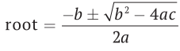

18. Корни квадратичной функции. (в коде есть строки из следующих тем: "модули").
Условие:
Корни квадратичной функции: f(x) = ax2 + bx + c, где a, b и c – константы и "a" не равна нулю.
Корни этой функции могут быть извлечены путем нахождения таких значений переменной x, для которых будет соблюдаться равенство ax2 + bx + c = 0. Эти значения могут быть вычислены с помощью формулы для корней квадратного уравнения, показанной ниже:

Квадратичная функция может иметь от нуля до двух действительных корней.
Часть выражения под квадратным корнем называется дискриминантом. Если дискриминант отрицательный, квадратное уравнение не будет иметь действительных корней.
В случае равенства дискриминанта нулю у квадратного уравнения будет ровно один действительный корень. Иначе корней будет два, и выражение необходимо будет вычислить дважды: один раз со знаком плюс, второй со знаком минус для числителя.
Напишите программу, вычисляющую действительные корни квадратичной функции. Сначала вы должны запросить у пользователя значения a, b и c. После этого должно быть выведено на экран количество действительных корней функции и их значения.
Код:
from math import sqrt
# ввод данных
a = float(input("%50s" % """Введите "a" (a не равно 0): """))
b = float(input("%50s" % """Введите "b": """))
c = float(input("%50s" % """Введите "c": """))
# вычисление дискриминанта
d = (b ** 2 - 4 * a * c)
if d == 0:
x = (-b) / (2 * a)
print("%49s" % "Значение функции:", x)
elif d > 0:
x = (-b + sqrt(d)) / (2 * a)
x2 = (-b - sqrt(d)) / (2 * a)
print("%49s" % "У функции два значения:", round(x, 4), "и", round(x2, 4))
else:
print("%49s" % "Уравнение не имееет корней.")